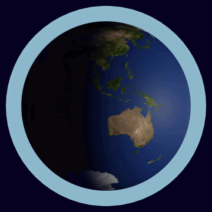
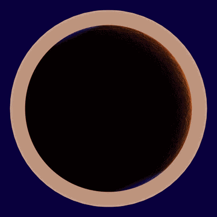

Blender Projects
Exploring 3D space, organic procedural materials, geometric modeling, and rendering.
The Solar System
The solar system is the gravitationally bound system of the Sun and the objects that orbit it. This animated sequence visualizes our celestial neighborhood, created entirely in Blender with 3D modeling, texturing, and animation tools.
Solar System Isometric View - Week 1 progress
For week 1 i modeled the sun and the first 5 planets, also i set up the camera for the sun and now im currently working on setting up the camera for the planets

The Sun
The Sun is the star at the center of the Solar System. It is a nearly perfect sphere of hot plasma, heated to incandescence by nuclear fusion reactions in its core. This 3D representation highlights the dynamic flares and procedural textures used to simulate its volatile surface in Blender.

Mercury
Mercury is the smallest planet in our Solar System and the closest to the Sun. Its surface is heavily cratered and resembles Earth's Moon. With virtually no atmosphere, temperatures swing wildly between scorching days and freezing nights. This Blender render captures its barren, rocky terrain through detailed procedural texturing.

Venus
Venus is the second planet from the Sun and is often called Earth's twin due to their similar size. Shrouded in thick clouds of sulfuric acid, its surface experiences extreme greenhouse heating, making it the hottest planet in our Solar System. This 3D render recreates its dense, swirling atmosphere and volcanic landscape in Blender.

Earth
Earth is the third planet from the Sun and the only known world to harbor life. Its surface is covered by vast oceans, lush continents, and a dynamic atmosphere that creates weather and climate. This Blender render showcases the planet's iconic blue marble appearance with realistic cloud layers and surface detail.

Mars
Mars is the fourth planet from the Sun, known as the Red Planet due to its iron oxide-rich surface. It features the tallest volcano and deepest canyon in the Solar System — Olympus Mons and Valles Marineris. This 3D render highlights its distinctive rusty terrain and thin atmosphere, modeled with procedural materials in Blender.
Your Age on Different Planets
Enter your Earth age below to discover how old you'd be across our Solar System.